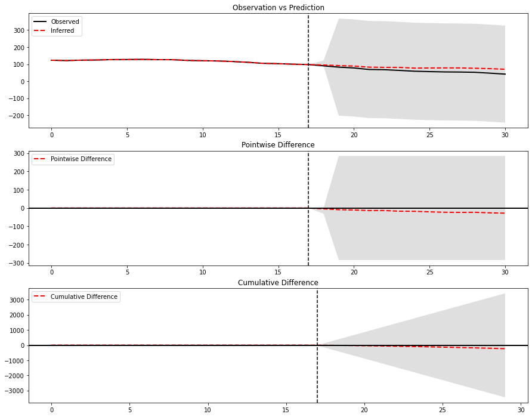
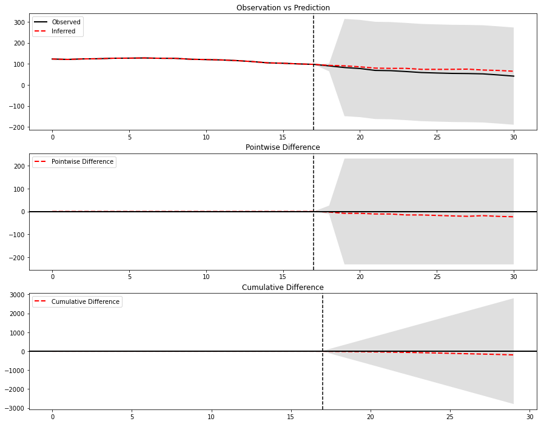
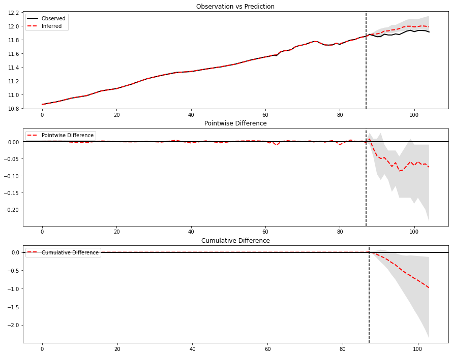
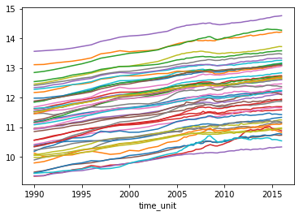
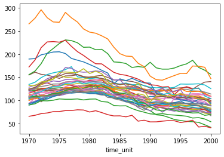
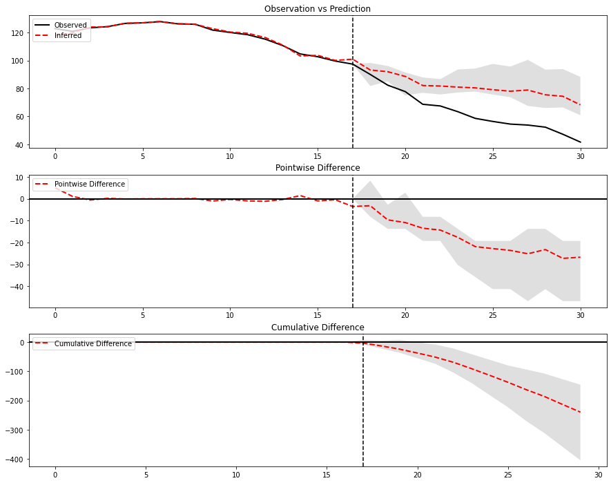

Conformal Inference
https://arxiv.org/pdf/1712.09089.pdf
[1]:
import sys
sys.path.insert(0, '..')
from panel_exp.panel_data import long_df_to_paneldataset, PanelDataset, TimePeriod
from panel_exp.design import CompleteRandomization, ThinningDesign, Rerandomization, QuickBlock
from panel_exp.design.design_metrics import imbalance
from sklearn.tree import DecisionTreeRegressor
from sklearn.linear_model import RidgeCV, Ridge
from panel_exp.methods.scm import SyntheticControl, AugSynth
from panel_exp.inference import conformal
import pandas as pd
from panel_exp.methods.tbr import TBR, TBRRidge
import numpy as np
from panel_exp.inference.unit_jackknife import unit_jk, unit_jackknife, time_jackknife_plus
[2]:
long_df = pd.read_csv('smoking.csv')
long_df.columns = ['unnamed', 'unit', 'time_unit', 'y', 'lnincome','beer','age15to24','retprice']
panel = long_df_to_paneldataset(long_df, "time_unit", "unit", "y", ["California" ], [1988 ])
[3]:
pre_t_time = panel.treated_start_idxs[0]-1
n_treated_units = len(panel.treated_units)
n_treated_time_periods = (panel.treated_end_idxs[0] - panel.treated_start_idxs[0])
[4]:
print((panel.treated_end_idxs[0] , panel.treated_start_idxs[0]))
(30, 18)
[5]:
print((panel.treated_end_idxs[0] - panel.treated_start_idxs[0]))
print(panel.times[panel.treated_end_idxs[0]] , panel.times[panel.treated_start_idxs[0]] )
12
2000 1988
[6]:
panel.treated_end_idxs[0]
[6]:
30
[7]:
panel.wide_data.shape
[7]:
(39, 31)
[8]:
panel.wide_data.loc[:, 1988:]
[8]:
| time_unit | 1988 | 1989 | 1990 | 1991 | 1992 | 1993 | 1994 | 1995 | 1996 | 1997 | 1998 | 1999 | 2000 |
|---|---|---|---|---|---|---|---|---|---|---|---|---|---|
| unit | |||||||||||||
| Alabama | 112.099998 | 105.599998 | 108.599998 | 107.900002 | 109.099998 | 108.500000 | 107.099998 | 102.599998 | 101.400002 | 104.900002 | 106.199997 | 100.699997 | 96.199997 |
| Arkansas | 121.500000 | 118.300003 | 113.099998 | 116.800003 | 126.000000 | 113.800003 | 108.800003 | 113.000000 | 110.699997 | 108.699997 | 109.500000 | 104.800003 | 99.400002 |
| California | 90.099998 | 82.400002 | 77.800003 | 68.699997 | 67.500000 | 63.400002 | 58.599998 | 56.400002 | 54.500000 | 53.799999 | 52.299999 | 47.200001 | 41.599998 |
| Colorado | 94.599998 | 88.800003 | 87.400002 | 90.199997 | 88.300003 | 88.599998 | 89.099998 | 85.400002 | 83.099998 | 81.300003 | 81.199997 | 79.599998 | 73.000000 |
| Connecticut | 104.800003 | 100.599998 | 91.500000 | 86.699997 | 83.500000 | 79.099998 | 76.599998 | 79.300003 | 76.000000 | 75.900002 | 75.500000 | 73.400002 | 71.400002 |
| Delaware | 137.100006 | 131.699997 | 127.199997 | 118.800003 | 120.000000 | 123.800003 | 126.099998 | 127.199997 | 128.300003 | 124.099998 | 132.800003 | 139.500000 | 140.699997 |
| Georgia | 124.099998 | 117.099998 | 113.800003 | 109.599998 | 109.199997 | 109.199997 | 107.800003 | 100.300003 | 102.699997 | 100.599998 | 100.500000 | 97.099998 | 88.400002 |
| Idaho | 84.500000 | 78.400002 | 90.099998 | 85.400002 | 85.099998 | 86.699997 | 93.000000 | 78.199997 | 73.599998 | 75.000000 | 78.900002 | 75.099998 | 66.900002 |
| Illinois | 107.599998 | 104.599998 | 94.099998 | 96.099998 | 94.800003 | 94.599998 | 85.699997 | 84.300003 | 81.800003 | 79.599998 | 80.300003 | 72.199997 | 70.000000 |
| Indiana | 134.000000 | 132.500000 | 128.300003 | 127.199997 | 128.199997 | 126.800003 | 128.199997 | 135.399994 | 135.100006 | 135.300003 | 135.899994 | 133.300003 | 125.500000 |
| Iowa | 100.199997 | 94.400002 | 95.400002 | 97.099998 | 95.199997 | 92.500000 | 93.400002 | 93.000000 | 94.000000 | 93.900002 | 94.000000 | 91.699997 | 88.900002 |
| Kansas | 103.199997 | 96.500000 | 94.300003 | 91.800003 | 90.000000 | 89.900002 | 89.099998 | 90.099998 | 88.699997 | 89.199997 | 87.599998 | 83.300003 | 79.800003 |
| Kentucky | 173.199997 | 171.600006 | 182.500000 | 170.399994 | 167.600006 | 167.600006 | 170.100006 | 175.300003 | 179.000000 | 186.800003 | 171.300003 | 165.300003 | 156.199997 |
| Louisiana | 110.900002 | 103.599998 | 101.500000 | 107.199997 | 108.500000 | 106.199997 | 105.300003 | 105.699997 | 106.800003 | 105.300003 | 103.199997 | 101.000000 | 104.300003 |
| Maine | 125.000000 | 122.400002 | 117.500000 | 116.099998 | 114.500000 | 108.500000 | 101.599998 | 102.300003 | 100.000000 | 101.099998 | 94.500000 | 85.500000 | 82.900002 |
| Minnesota | 94.099998 | 92.300003 | 90.699997 | 86.199997 | 83.800003 | 81.599998 | 83.400002 | 84.099998 | 81.699997 | 84.099998 | 83.199997 | 80.699997 | 76.000000 |
| Mississippi | 109.000000 | 108.300003 | 101.800003 | 105.599998 | 103.900002 | 105.400002 | 106.000000 | 107.500000 | 106.900002 | 106.300003 | 107.000000 | 103.900002 | 97.199997 |
| Missouri | 127.400002 | 122.800003 | 119.099998 | 119.900002 | 122.300003 | 121.599998 | 119.400002 | 124.000000 | 124.099998 | 120.599998 | 120.099998 | 118.000000 | 113.800003 |
| Montana | 87.099998 | 86.199997 | 84.699997 | 82.900002 | 86.599998 | 86.000000 | 88.199997 | 90.500000 | 87.300003 | 88.900002 | 89.099998 | 82.599998 | 75.500000 |
| Nebraska | 92.900002 | 93.800003 | 89.900002 | 92.400002 | 90.599998 | 91.099998 | 85.900002 | 88.500000 | 86.199997 | 85.500000 | 83.099998 | 86.599998 | 77.599998 |
| Nevada | 141.899994 | 137.899994 | 137.300003 | 115.500000 | 110.000000 | 108.099998 | 105.199997 | 100.900002 | 99.000000 | 95.599998 | 102.400002 | 103.900002 | 93.199997 |
| New Hampshire | 180.399994 | 172.899994 | 152.399994 | 144.800003 | 143.699997 | 148.899994 | 153.800003 | 158.500000 | 158.000000 | 174.399994 | 173.800003 | 171.699997 | 147.300003 |
| New Mexico | 77.699997 | 74.400002 | 70.800003 | 69.900002 | 71.400002 | 69.000000 | 68.199997 | 67.000000 | 65.699997 | 61.799999 | 62.599998 | 59.700001 | 53.799999 |
| North Carolina | 146.000000 | 139.300003 | 133.699997 | 132.699997 | 128.899994 | 129.699997 | 112.699997 | 124.900002 | 129.699997 | 125.599998 | 126.000000 | 113.099998 | 109.000000 |
| North Dakota | 87.099998 | 84.099998 | 77.099998 | 85.199997 | 74.300003 | 83.000000 | 81.000000 | 80.599998 | 80.800003 | 77.500000 | 79.099998 | 74.699997 | 72.500000 |
| Ohio | 122.400002 | 118.599998 | 115.500000 | 113.199997 | 112.300003 | 108.900002 | 108.599998 | 111.699997 | 107.599998 | 108.599998 | 106.400002 | 104.000000 | 99.900002 |
| Oklahoma | 103.599998 | 97.500000 | 88.400002 | 87.800003 | 86.300003 | 86.199997 | 104.800003 | 109.500000 | 110.800003 | 111.800003 | 112.199997 | 111.400002 | 108.900002 |
| Pennsylvania | 107.599998 | 107.099998 | 101.300003 | 102.500000 | 96.199997 | 94.699997 | 95.400002 | 95.400002 | 93.300003 | 92.900002 | 92.099998 | 91.099998 | 87.900002 |
| Rhode Island | 138.000000 | 120.800003 | 101.400002 | 103.599998 | 100.099998 | 94.099998 | 91.900002 | 90.800003 | 87.500000 | 90.000000 | 88.699997 | 86.900002 | 83.099998 |
| South Carolina | 124.400002 | 122.400002 | 118.599998 | 121.500000 | 112.800003 | 115.199997 | 112.199997 | 109.199997 | 102.900002 | 124.500000 | 126.900002 | 109.400002 | 103.900002 |
| South Dakota | 91.900002 | 87.400002 | 88.300003 | 91.800003 | 93.000000 | 91.599998 | 94.800003 | 98.599998 | 92.300003 | 88.800003 | 88.300003 | 83.500000 | 75.099998 |
| Tennessee | 125.300003 | 124.699997 | 121.800003 | 120.599998 | 121.000000 | 120.800003 | 118.800003 | 125.400002 | 119.199997 | 118.900002 | 119.699997 | 115.599998 | 108.699997 |
| Texas | 96.500000 | 94.500000 | 85.599998 | 79.400002 | 77.199997 | 81.300003 | 78.800003 | 75.199997 | 74.599998 | 72.599998 | 73.199997 | 67.599998 | 69.300003 |
| Utah | 55.000000 | 57.000000 | 53.400002 | 53.500000 | 55.000000 | 56.200001 | 55.799999 | 52.000000 | 54.000000 | 57.000000 | 42.299999 | 43.900002 | 40.700001 |
| Vermont | 128.699997 | 120.900002 | 124.300003 | 120.900002 | 126.500000 | 117.199997 | 120.300003 | 123.199997 | 102.500000 | 97.699997 | 97.000000 | 94.099998 | 88.900002 |
| Virginia | 129.500000 | 122.500000 | 118.900002 | 109.099998 | 108.199997 | 105.400002 | 106.199997 | 106.699997 | 104.599998 | 108.000000 | 105.599998 | 102.099998 | 96.699997 |
| West Virginia | 109.099998 | 104.000000 | 104.099998 | 100.099998 | 97.900002 | 111.000000 | 104.199997 | 115.199997 | 112.699997 | 114.500000 | 114.599998 | 112.400002 | 107.900002 |
| Wisconsin | 102.599998 | 100.300003 | 94.000000 | 95.500000 | 96.199997 | 91.199997 | 91.800003 | 93.500000 | 92.099998 | 91.900002 | 88.699997 | 84.400002 | 80.099998 |
| Wyoming | 114.300003 | 111.400002 | 96.900002 | 109.099998 | 110.800003 | 108.400002 | 111.199997 | 115.000000 | 110.300003 | 108.800003 | 102.900002 | 104.800003 | 90.500000 |
[ ]:
[9]:
#scm_1 = SyntheticControl(inference='JKP' )
#scm_1.run_analysis(panel)
#scm_1.plot()
[10]:
scm_1 = SyntheticControl(inference='Conformal' )
scm_1.run_analysis(panel)
scm_1.plot()

[ ]:
[11]:
from panel_exp.methods.tbr import TBR, TBRRidge
est = TBRRidge(inference='Conformal' )
est.run_analysis(panel)
est.plot()

[14]:
long_df = pd.read_csv('kansas_parsed.csv')
panel_data = long_df_to_paneldataset(long_df, "year_qtr", "state", "lngdp", ["Kansas" ], [2012])
[16]:
est = TBRRidge(inference='Conformal' )
est.run_analysis(panel_data)
est.plot()

[ ]:
[ ]:
[ ]:
[ ]:
[ ]:
Issue One
I auto generate potential null hypothesis to test against (line 126 of impact ABC). The 1-alpha CI might get cut off if this is not a good estimate, so we’ll need to update to pass a custom list.
Choosing them is not easy
AugSynth Below
[11]:
long_df = pd.read_csv('kansas_parsed.csv')
panel_data = long_df_to_paneldataset(long_df, "year_qtr", "state", "lngdp", ["Kansas" ], [2012])
[15]:
asynth = AugSynth(inference='Conformal', outcome_model=RidgeCV, alphas=[1e-3, 1e-2, 1e-1, 1])
[16]:
asynth.run_analysis(pds, outcome_model=RidgeCV, alphas=[1e-3, 1e-2, 1e-1, 1])
asynth.plot()

[11]:
from panel_exp.methods.tbr import TBR, TBRRidge
[17]:
long_df = pd.read_csv('kansas_parsed.csv')
long_df.head()
long_df.columns = ['un', 'value', 'treated', 'fips', 'time_unit', 'unit']
panel_data = long_df_to_paneldataset(long_df, "time_unit", "unit", "value", ["Kansas"], 2012)
print(panel_data.summarize())
Panel Dataset Summary
---------------------
Number of time points: 105
Number of units: 50
Number of treated units: 1
Treated units: ['Kansas']
Treated periods: [TimePeriod(start=2012, end=None)]
[18]:
wide = pd.pivot_table(long_df, columns='time_unit', index='unit', values = 'value', aggfunc=sum, fill_value=0)
treated = ['Kansas']
control_units = pd.DataFrame(wide.loc[[c for c in wide.index if c not in treated]].mean(axis=0), columns=['controls']).T
treated_units = wide.loc[treated]
wide_agg = pd.concat([treated_units, control_units])
panel_data = PanelDataset(wide_agg, treated_units = treated, treated_periods=[TimePeriod(start=2012)])
[19]:
tbr = TBR(inference='Conformal')
tbr.run_analysis(panel_data)
tbr.plot()
---------------------------------------------------------------------------
AssertionError Traceback (most recent call last)
Input In [19], in <cell line: 2>()
1 tbr = TBR(inference='Conformal')
----> 2 tbr.run_analysis(pds)
3 tbr.plot()
File ~/Documents/panel_exp/examples/../panel_exp/impact.py:131, in ImpactAnalyzer.run_analysis(self, panel_data, **inference_kwargs)
128 self.results["y_lower"] = y_lower
130 elif self.inference == "Conformal":
--> 131 self.fit_data(panel_data)
132 self.model = self.fit_model()
133 self.y_hat = self.model.predict(self.panel_data.control_series(self.panel_data.treated_units).values.T)
File ~/Documents/panel_exp/examples/../panel_exp/methods/tbr.py:63, in TBR.fit_data(self, panel)
58 self.panel_data = panel
60 assert (
61 len(self.panel_data.treated_units) == 1
62 ), "TBR requires treated units to be pre-aggregated. Try TBRRidge or aggregate treated units"
---> 63 assert (
64 self.panel_data.num_control_units == 1
65 ), "TBR requires control units to be pre-aggregated. Try TBRRidge or aggregate control units"
67 if self.full_model:
68 y = self.panel_data.treated_series(treated_units = self.panel_data.treated_units , period='full').values.T.flatten()
AssertionError: TBR requires control units to be pre-aggregated. Try TBRRidge or aggregate control units
[ ]:
[20]:
long_df = pd.read_csv('kansas_parsed.csv')
long_df.head()
long_df.columns = ['un', 'value', 'treated', 'fips', 'time_unit', 'unit']
panel_data = long_df_to_paneldataset(long_df, "time_unit", "unit", "value", ["Kansas"], 2012)
print(panel_data.summarize())
Panel Dataset Summary
---------------------
Number of time points: 105
Number of units: 50
Number of treated units: 1
Treated units: ['Kansas']
Treated periods: [TimePeriod(start=2012, end=None)]
[ ]:
[21]:
tbr = TBRRidge(inference='Conformal')
tbr.run_analysis(panel_data)
tbr.plot()

[29]:
panel_data.wide_data.T.plot(legend=False)
[29]:
<AxesSubplot:xlabel='time_unit'>

[28]:
pds.wide_data.T.plot(legend=False)
[28]:
<AxesSubplot:xlabel='time_unit'>

[ ]:
'''
While Conformal Inference is proven to be robust in many scenarios, it is not guaranteed to work everytime. Most commonly, Conformal Inference can fail when
there is not enough days in the Pre-Treatment Period
the true impact (called in the paper as Shock Sequence Ut) is not stationary or not weakly dependent
the data is not stationary and not weakly dependent
when our model is misspecified or inconsistent
'''
[ ]:
[ ]:
[30]:
scm_1 = SyntheticControl(inference='Conformal' )
scm_1.run_analysis(pds)
scm_1.plot()

[22]:
tbr = TBRRidge(inference='Conformal')
tbr.run_analysis(pds)
tbr.plot()

[ ]:
[ ]:
[ ]:
# DID
[17]:
from panel_exp.methods.DID import DID
[18]:
long_df = pd.read_csv('smoking.csv')
[19]:
long_df.columns = ['unnamed', 'unit', 'time_unit', 'y', 'lnincome','beer','age15to24','retprice']
[24]:
panel_data = long_df_to_paneldataset(long_df, "time_unit", "unit", "y", ["California"], 1989)
[25]:
did = DID()
[26]:
did.run_analysis(panel_data)
[27]:
did.plot()

[2]:
#JK+
data = pd.read_csv('../meta_geo.csv')
[3]:
wide_df = pd.pivot_table(data, index='location', columns='time', values='Y')
pds = PanelDataset(wide_df, [TimePeriod(start =91, end=105), TimePeriod(start =91, end=105)], ["chicago", "portland"])
[4]:
pds
[4]:
Panel Dataset Summary
---------------------
Number of time points: 105
Number of units: 40
Number of treated units: 2
Treated units: ['chicago', 'portland']
Treated periods: [TimePeriod(start=91, end=105), TimePeriod(start=91, end=105)]
[5]:
scm_1 = TBRRidge(inference='JKP' )
scm_1.run_analysis(pds)
scm_1.plot()
---------------------------------------------------------------------------
ValueError Traceback (most recent call last)
Input In [5], in <cell line: 2>()
1 scm_1 = TBRRidge(inference='JKP' )
----> 2 scm_1.run_analysis(pds)
3 scm_1.plot()
File ~/Documents/panel_exp/examples/../panel_exp/impact.py:114, in ImpactAnalyzer.run_analysis(self, panel_data, **inference_kwargs)
111 pre_t_time = panel_data.treated_start_idxs[0]-1
112 n_treated_units = len(panel_data.treated_units)
--> 114 self.lower, self.upper = jkp(
115 panel_data, self.__class__, alpha=self.alpha, **inference_kwargs
116 )
118 self.results["y_lower"] = np.zeros_like(self.results['y'])
119 self.results["y_upper"] = np.zeros_like(self.results['y'])
File ~/Documents/panel_exp/examples/../panel_exp/inference/unit_jackknife.py:103, in jkp(panel, estimator, alpha, **estimator_kwargs)
100 residuals = model.results['y'][new_pds.treated_start_idxs[0]:] - model.results['y_hat'][new_pds.treated_start_idxs[0]:]
101 error = np.abs(residuals[-1])
--> 103 upper = (residuals[:-1] + error).reshape(n_treated_time_periods,n_treated_units)
104 lower = (residuals[:-1] - error).reshape(n_treated_time_periods,n_treated_units)
106 lower_df[t_unit] += lower
ValueError: cannot reshape array of size 30 into shape (13,2)
[ ]:
[ ]:
[ ]:
[ ]:
[167]:
from typing import Callable, Optional, Callable, Dict
def resolve_end_period(time_period):
if time_period.end is None:
return None
else:
return time_period.end+1
def jkp(panel: PanelDataset, estimator: Callable , alpha = .1 , **estimator_kwargs) -> np.array:
pre_t_time = panel.treated_start_idxs[0]-1
n_treated_units = len(panel.treated_units)
n_treated_time_periods = (panel.treated_end_idxs[0] - panel.treated_start_idxs[0])+1
lower_df = np.zeros((pre_t_time
, n_treated_time_periods
, n_treated_units))
upper_df = np.zeros((pre_t_time
, n_treated_time_periods
, n_treated_units))
for t_unit in range(pre_t_time):
# drop t unit from pre-treatment periods
new_wide_df = panel.wide_data.drop(panel.times[t_unit], axis=1)
# append to end
new_wide_df = new_wide_df.assign(new_column = panel.wide_data.loc[:, panel.times[t_unit]]).rename(columns={"new_column": panel.times[-1]+1})
# new PDS
new_pds = PanelDataset(new_wide_df
, [TimePeriod(start=tp.start, end=resolve_end_period(tp)) for tp in panel.treated_periods]
, panel.treated_units)
# fit new model
model = estimator(**estimator_kwargs)
model.run_analysis(new_pds)
residuals = model.results['y'][new_pds.treated_start_idxs[0]:] - model.results['y_hat'][new_pds.treated_start_idxs[0]:]
error = np.abs(residuals[-1])
upper = residuals[:-1] + error
lower = residuals[:-1] - error
lower_df[t_unit] += lower
upper_df[t_unit] += upper
return np.percentile(lower_df, alpha*100, axis=0), np.percentile(upper_df, alpha*100, axis=0)
[169]:
upper, lower = jkp(pds,TBRRidge , alpha = .1 )
[ ]:
[ ]:
[104]:
import numpy as np
residuals = model.results['y'][new_pds.treated_start_idxs[0]:] - model.results['y_hat'][new_pds.treated_start_idxs[0]:]
error = np.abs(residuals[-1])
upper = residuals[:-1] + error
lower = residuals[:-1] - error
[151]:
import matplotlib.pyplot as plt
lower_df.mean(axis=0).mean(axis=1)
[151]:
array([ 26.67197577, -145.99702647, -59.01326107, -137.5385917 ,
77.45688827, 161.15620701, 365.83684266, 432.34571191,
148.27407313, 348.35518953, 27.77714308, 31.44751405,
78.44489367, 157.44469118, 23.00917491])
[161]:
np.percentile(lower_df, 10, axis=0)
[161]:
array([[ -245.29132497, -81.64178769],
[ -389.68769713, -273.54434137],
[ -355.61973184, -159.30314536],
[ -379.31490151, -288.53288332],
[ -259.97186247, 52.29574751],
[ -295.36283832, 229.58799744],
[ -289.068138 , 628.13741019],
[ -257.28873236, 778.90302821],
[ -640.65376712, 587.6600975 ],
[ -345.13209464, 683.34380803],
[-1258.60311232, 872.0330179 ],
[-1290.01825979, 887.22515952],
[ -400.70261044, 227.47539762],
[ -308.24286582, 254.81305654],
[ -436.32923177, 112.15619806]])
[162]:
np.percentile(upper_df, 10, axis=0)
[162]:
array([[ 78.02296486, 318.05036833],
[ -59.22074608, 108.23512353],
[ -16.04973146, 240.35389126],
[ -38.29194866, 104.74625001],
[ 65.1853381 , 432.06293016],
[ 49.22205675, 618.70712685],
[ 56.37897976, 1017.45632974],
[ 49.26895942, 1162.46403775],
[-320.82614846, 963.87675825],
[ -24.13588413, 1067.45385883],
[-909.53036418, 1271.79451597],
[-929.89225604, 1305.02735736],
[ -98.61692922, 599.89445312],
[ 32.64084971, 627.7193562 ],
[-104.3190664 , 496.18413908]])
[64]:
resolve_end_period(pds.treated_periods[0])
[29]:
new_wide = pds.wide_data.drop(1970, axis=1)
[55]:
pds.times[-1]+1
[55]:
2001
[57]:
new_wide.assign(new_column = pds.wide_data.loc[:, 1970]).rename(columns={"new_column": pds.times[-1]+1})
[57]:
| time_unit | 1971 | 1972 | 1973 | 1974 | 1975 | 1976 | 1977 | 1978 | 1979 | 1980 | ... | 1992 | 1993 | 1994 | 1995 | 1996 | 1997 | 1998 | 1999 | 2000 | 2001 |
|---|---|---|---|---|---|---|---|---|---|---|---|---|---|---|---|---|---|---|---|---|---|
| unit | |||||||||||||||||||||
| Alabama | 95.400002 | 101.099998 | 102.900002 | 108.199997 | 111.699997 | 116.199997 | 117.099998 | 123.000000 | 121.400002 | 123.199997 | ... | 109.099998 | 108.500000 | 107.099998 | 102.599998 | 101.400002 | 104.900002 | 106.199997 | 100.699997 | 96.199997 | 89.800003 |
| Arkansas | 104.099998 | 103.900002 | 108.000000 | 109.699997 | 114.800003 | 119.099998 | 122.599998 | 127.300003 | 126.500000 | 131.800003 | ... | 126.000000 | 113.800003 | 108.800003 | 113.000000 | 110.699997 | 108.699997 | 109.500000 | 104.800003 | 99.400002 | 100.300003 |
| California | 121.000000 | 123.500000 | 124.400002 | 126.699997 | 127.099998 | 128.000000 | 126.400002 | 126.099998 | 121.900002 | 120.199997 | ... | 67.500000 | 63.400002 | 58.599998 | 56.400002 | 54.500000 | 53.799999 | 52.299999 | 47.200001 | 41.599998 | 123.000000 |
| Colorado | 125.500000 | 134.300003 | 137.899994 | 132.800003 | 131.000000 | 134.199997 | 132.000000 | 129.199997 | 131.500000 | 131.000000 | ... | 88.300003 | 88.599998 | 89.099998 | 85.400002 | 83.099998 | 81.300003 | 81.199997 | 79.599998 | 73.000000 | 124.800003 |
| Connecticut | 117.599998 | 110.800003 | 109.300003 | 112.400002 | 110.199997 | 113.400002 | 117.300003 | 117.500000 | 117.400002 | 118.000000 | ... | 83.500000 | 79.099998 | 76.599998 | 79.300003 | 76.000000 | 75.900002 | 75.500000 | 73.400002 | 71.400002 | 120.000000 |
| Delaware | 161.100006 | 156.300003 | 154.699997 | 151.300003 | 147.600006 | 153.000000 | 153.300003 | 155.500000 | 150.199997 | 150.500000 | ... | 120.000000 | 123.800003 | 126.099998 | 127.199997 | 128.300003 | 124.099998 | 132.800003 | 139.500000 | 140.699997 | 155.000000 |
| Georgia | 115.699997 | 117.000000 | 119.800003 | 123.699997 | 122.900002 | 125.900002 | 127.900002 | 130.600006 | 131.000000 | 134.000000 | ... | 109.199997 | 109.199997 | 107.800003 | 100.300003 | 102.699997 | 100.599998 | 100.500000 | 97.099998 | 88.400002 | 109.900002 |
| Idaho | 108.500000 | 126.099998 | 121.800003 | 125.599998 | 123.300003 | 125.099998 | 125.000000 | 122.800003 | 117.500000 | 115.199997 | ... | 85.099998 | 86.699997 | 93.000000 | 78.199997 | 73.599998 | 75.000000 | 78.900002 | 75.099998 | 66.900002 | 102.400002 |
| Illinois | 125.599998 | 126.599998 | 124.400002 | 131.899994 | 131.800003 | 134.399994 | 134.000000 | 136.699997 | 135.300003 | 135.199997 | ... | 94.800003 | 94.599998 | 85.699997 | 84.300003 | 81.800003 | 79.599998 | 80.300003 | 72.199997 | 70.000000 | 124.800003 |
| Indiana | 139.300003 | 149.199997 | 156.000000 | 159.600006 | 162.399994 | 166.600006 | 173.000000 | 150.899994 | 148.899994 | 146.899994 | ... | 128.199997 | 126.800003 | 128.199997 | 135.399994 | 135.100006 | 135.300003 | 135.899994 | 133.300003 | 125.500000 | 134.600006 |
| Iowa | 108.400002 | 109.400002 | 110.599998 | 116.099998 | 120.500000 | 124.400002 | 125.500000 | 127.099998 | 124.199997 | 124.599998 | ... | 95.199997 | 92.500000 | 93.400002 | 93.000000 | 94.000000 | 93.900002 | 94.000000 | 91.699997 | 88.900002 | 108.500000 |
| Kansas | 102.800003 | 111.000000 | 115.199997 | 118.599998 | 123.400002 | 127.699997 | 127.900002 | 127.099998 | 126.400002 | 127.099998 | ... | 90.000000 | 89.900002 | 89.099998 | 90.099998 | 88.699997 | 89.199997 | 87.599998 | 83.300003 | 79.800003 | 114.000000 |
| Kentucky | 163.500000 | 179.399994 | 201.899994 | 212.399994 | 223.000000 | 230.899994 | 229.399994 | 224.699997 | 214.899994 | 215.300003 | ... | 167.600006 | 167.600006 | 170.100006 | 175.300003 | 179.000000 | 186.800003 | 171.300003 | 165.300003 | 156.199997 | 155.800003 |
| Louisiana | 119.800003 | 125.300003 | 126.699997 | 129.899994 | 133.600006 | 139.600006 | 140.000000 | 142.699997 | 140.100006 | 143.800003 | ... | 108.500000 | 106.199997 | 105.300003 | 105.699997 | 106.800003 | 105.300003 | 103.199997 | 101.000000 | 104.300003 | 115.900002 |
| Maine | 133.199997 | 136.500000 | 138.000000 | 142.100006 | 140.699997 | 144.899994 | 145.600006 | 143.899994 | 138.500000 | 141.199997 | ... | 114.500000 | 108.500000 | 101.599998 | 102.300003 | 100.000000 | 101.099998 | 94.500000 | 85.500000 | 82.900002 | 128.500000 |
| Minnesota | 116.400002 | 96.800003 | 106.800003 | 110.599998 | 111.500000 | 116.699997 | 117.199997 | 118.900002 | 118.300003 | 117.699997 | ... | 83.800003 | 81.599998 | 83.400002 | 84.099998 | 81.699997 | 84.099998 | 83.199997 | 80.699997 | 76.000000 | 104.300003 |
| Mississippi | 105.400002 | 112.099998 | 115.000000 | 117.099998 | 116.800003 | 120.900002 | 122.099998 | 124.900002 | 123.900002 | 127.000000 | ... | 103.900002 | 105.400002 | 106.000000 | 107.500000 | 106.900002 | 106.300003 | 107.000000 | 103.900002 | 97.199997 | 93.400002 |
| Missouri | 127.599998 | 130.000000 | 132.100006 | 135.399994 | 135.600006 | 139.500000 | 140.800003 | 141.800003 | 140.199997 | 142.100006 | ... | 122.300003 | 121.599998 | 119.400002 | 124.000000 | 124.099998 | 120.599998 | 120.099998 | 118.000000 | 113.800003 | 121.300003 |
| Montana | 115.599998 | 122.199997 | 119.900002 | 121.900002 | 123.699997 | 124.900002 | 127.000000 | 127.199997 | 120.300003 | 122.000000 | ... | 86.599998 | 86.000000 | 88.199997 | 90.500000 | 87.300003 | 88.900002 | 89.099998 | 82.599998 | 75.500000 | 111.199997 |
| Nebraska | 108.599998 | 104.900002 | 106.599998 | 110.500000 | 114.099998 | 118.099998 | 117.699997 | 117.400002 | 116.099998 | 116.300003 | ... | 90.599998 | 91.099998 | 85.900002 | 88.500000 | 86.199997 | 85.500000 | 83.099998 | 86.599998 | 77.599998 | 108.099998 |
| Nevada | 190.500000 | 198.600006 | 201.500000 | 204.699997 | 205.199997 | 201.399994 | 190.800003 | 187.000000 | 183.300003 | 177.699997 | ... | 110.000000 | 108.099998 | 105.199997 | 100.900002 | 99.000000 | 95.599998 | 102.400002 | 103.900002 | 93.199997 | 189.500000 |
| New Hampshire | 278.000000 | 296.200012 | 279.000000 | 269.799988 | 269.100006 | 290.500000 | 278.799988 | 269.600006 | 254.600006 | 247.800003 | ... | 143.699997 | 148.899994 | 153.800003 | 158.500000 | 158.000000 | 174.399994 | 173.800003 | 171.699997 | 147.300003 | 265.700012 |
| New Mexico | 92.599998 | 99.300003 | 98.900002 | 100.300003 | 103.099998 | 102.400002 | 102.400002 | 103.099998 | 101.000000 | 102.699997 | ... | 71.400002 | 69.000000 | 68.199997 | 67.000000 | 65.699997 | 61.799999 | 62.599998 | 59.700001 | 53.799999 | 90.000000 |
| North Carolina | 187.600006 | 214.100006 | 226.500000 | 227.300003 | 226.000000 | 230.199997 | 217.000000 | 205.500000 | 197.300003 | 187.800003 | ... | 128.899994 | 129.699997 | 112.699997 | 124.900002 | 129.699997 | 125.599998 | 126.000000 | 113.099998 | 109.000000 | 172.399994 |
| North Dakota | 98.500000 | 103.800003 | 108.699997 | 110.500000 | 117.900002 | 125.400002 | 122.199997 | 121.900002 | 121.300003 | 123.699997 | ... | 74.300003 | 83.000000 | 81.000000 | 80.599998 | 80.800003 | 77.500000 | 79.099998 | 74.699997 | 72.500000 | 93.800003 |
| Ohio | 124.599998 | 124.400002 | 120.500000 | 122.099998 | 122.500000 | 124.599998 | 127.300003 | 131.300003 | 130.899994 | 133.500000 | ... | 112.300003 | 108.900002 | 108.599998 | 111.699997 | 107.599998 | 108.599998 | 106.400002 | 104.000000 | 99.900002 | 121.599998 |
| Oklahoma | 115.400002 | 121.699997 | 124.099998 | 130.500000 | 132.899994 | 138.600006 | 140.399994 | 143.600006 | 141.600006 | 141.600006 | ... | 86.300003 | 86.199997 | 104.800003 | 109.500000 | 110.800003 | 111.800003 | 112.199997 | 111.400002 | 108.900002 | 108.400002 |
| Pennsylvania | 106.300003 | 109.000000 | 110.699997 | 114.199997 | 114.599998 | 118.800003 | 120.099998 | 122.300003 | 122.599998 | 124.000000 | ... | 96.199997 | 94.699997 | 95.400002 | 95.400002 | 93.300003 | 92.900002 | 92.099998 | 91.099998 | 87.900002 | 107.300003 |
| Rhode Island | 123.199997 | 134.399994 | 142.000000 | 146.100006 | 154.699997 | 150.199997 | 148.800003 | 146.800003 | 145.800003 | 149.300003 | ... | 100.099998 | 94.099998 | 91.900002 | 90.800003 | 87.500000 | 90.000000 | 88.699997 | 86.900002 | 83.099998 | 123.900002 |
| South Carolina | 115.000000 | 118.699997 | 125.500000 | 129.699997 | 130.500000 | 136.800003 | 137.199997 | 140.399994 | 135.699997 | 138.300003 | ... | 112.800003 | 115.199997 | 112.199997 | 109.199997 | 102.900002 | 124.500000 | 126.900002 | 109.400002 | 103.900002 | 103.599998 |
| South Dakota | 96.699997 | 103.000000 | 103.500000 | 108.400002 | 113.500000 | 116.699997 | 115.599998 | 116.900002 | 117.400002 | 114.699997 | ... | 93.000000 | 91.599998 | 94.800003 | 98.599998 | 92.300003 | 88.800003 | 88.300003 | 83.500000 | 75.099998 | 92.699997 |
| Tennessee | 106.300003 | 111.500000 | 109.699997 | 114.800003 | 117.400002 | 121.699997 | 124.599998 | 127.300003 | 127.199997 | 130.399994 | ... | 121.000000 | 120.800003 | 118.800003 | 125.400002 | 119.199997 | 118.900002 | 119.699997 | 115.599998 | 108.699997 | 99.800003 |
| Texas | 108.900002 | 108.599998 | 110.400002 | 114.699997 | 116.000000 | 121.400002 | 124.199997 | 126.599998 | 126.400002 | 129.699997 | ... | 77.199997 | 81.300003 | 78.800003 | 75.199997 | 74.599998 | 72.599998 | 73.199997 | 67.599998 | 69.300003 | 106.400002 |
| Utah | 67.699997 | 71.300003 | 72.699997 | 75.599998 | 75.800003 | 77.900002 | 78.000000 | 79.599998 | 79.099998 | 74.800003 | ... | 55.000000 | 56.200001 | 55.799999 | 52.000000 | 54.000000 | 57.000000 | 42.299999 | 43.900002 | 40.700001 | 65.500000 |
| Vermont | 124.400002 | 138.000000 | 146.800003 | 151.800003 | 155.500000 | 171.100006 | 169.399994 | 162.399994 | 160.899994 | 161.600006 | ... | 126.500000 | 117.199997 | 120.300003 | 123.199997 | 102.500000 | 97.699997 | 97.000000 | 94.099998 | 88.900002 | 122.599998 |
| Virginia | 128.399994 | 137.000000 | 143.100006 | 149.600006 | 152.699997 | 158.100006 | 157.699997 | 155.899994 | 151.800003 | 148.899994 | ... | 108.199997 | 105.400002 | 106.199997 | 106.699997 | 104.599998 | 108.000000 | 105.599998 | 102.099998 | 96.699997 | 124.300003 |
| West Virginia | 111.500000 | 117.500000 | 116.599998 | 119.900002 | 123.199997 | 129.699997 | 133.899994 | 131.600006 | 122.099998 | 122.300003 | ... | 97.900002 | 111.000000 | 104.199997 | 115.199997 | 112.699997 | 114.500000 | 114.599998 | 112.400002 | 107.900002 | 114.500000 |
| Wisconsin | 105.400002 | 108.800003 | 109.500000 | 111.800003 | 113.500000 | 115.400002 | 117.199997 | 116.699997 | 117.099998 | 117.599998 | ... | 96.199997 | 91.199997 | 91.800003 | 93.500000 | 92.099998 | 91.900002 | 88.699997 | 84.400002 | 80.099998 | 106.400002 |
| Wyoming | 131.699997 | 140.000000 | 141.199997 | 145.800003 | 160.699997 | 161.500000 | 160.399994 | 160.300003 | 168.600006 | 158.100006 | ... | 110.800003 | 108.400002 | 111.199997 | 115.000000 | 110.300003 | 108.800003 | 102.900002 | 104.800003 | 90.500000 | 132.199997 |
39 rows × 31 columns
[37]:
pds.wide_data.loc[:, 1970]
[37]:
unit
Alabama 89.800003
Arkansas 100.300003
California 123.000000
Colorado 124.800003
Connecticut 120.000000
Delaware 155.000000
Georgia 109.900002
Idaho 102.400002
Illinois 124.800003
Indiana 134.600006
Iowa 108.500000
Kansas 114.000000
Kentucky 155.800003
Louisiana 115.900002
Maine 128.500000
Minnesota 104.300003
Mississippi 93.400002
Missouri 121.300003
Montana 111.199997
Nebraska 108.099998
Nevada 189.500000
New Hampshire 265.700012
New Mexico 90.000000
North Carolina 172.399994
North Dakota 93.800003
Ohio 121.599998
Oklahoma 108.400002
Pennsylvania 107.300003
Rhode Island 123.900002
South Carolina 103.599998
South Dakota 92.699997
Tennessee 99.800003
Texas 106.400002
Utah 65.500000
Vermont 122.599998
Virginia 124.300003
West Virginia 114.500000
Wisconsin 106.400002
Wyoming 132.199997
Name: 1970, dtype: float64
[ ]: